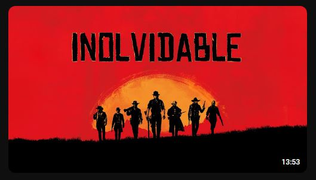

¿Por qué jugar Red Dead Redemption?
Motivo 1:
Su historia: La historia de Red Dead Redemption 2, es tan compleja y tan bien lograda, que, a medida que avanzas en el juego, sientes que Arthur Morgan (su protagonista), es alguien que tú ya conoces, esto porque el desarrollo del personaje es muy humano, y vas comprendiendo cómo sus vivencias y relaciones con el resto de los personajes, han ido forjando su personalidad y por lo tanto su destino. Este desarrollo de personaje no es rápido, es más bien pausado, sin embargo esto lo lleva a ser un juego más realista, inmersivo e incluso reflexivo.
El ámbito reflexivo de la historia de Arthur Morgan, invita al jugador no solo a ser expectador, sino que también que ser un compañero de reflexión del personaje, generando cuestionamientos existencialistas sobre lo que significa vivir y disfrutar del mundo y de quienes nos rodean. En fin, una historia llena de cuestionamientos y recordatorios sobre lo que es importante en la vida.

Motivo 2:
Horas de juego y jugabilidad: RDR2 cuenta con una cantidad de horas de jugabilidad gigante, lo cual es proporcional a su contenido. Más allá de su trama principal, hay decenas de misiones secundarias y actividades opcionales que aparecen en tu camino, como cazar, pescar, observar animales, ayudar a otros personajes, entre otros. Y cabe señalar que el contenido reciclado casi no existe, porque cada misión secundaria es única y de hecho nuestras decisiones en estas misiones podrían cambiar de cierta forma la historia del juego (no la historia principal, pero si la de los personajes secundarios y su relación con Arthur).
Además, cada zona del mapa del juego tiene grandes diferencias, que hacen de cada lugar algo único. Existen culturas, climas e incluso historias que pertecen a cada lugar, y hacen de la jugabilidad algo sumamente inmersivo. Por ello cada hora de juego, se siente fresca, y como en una película, te sientes con la necesidad de saber qué ocurrirá con las acciones del personaje.

Motivo 3:
Easter Eggs: Los secretos y curiosidades que pueden aparecer en este juego de Rockstar son inmensos. Personalmente he jugado dos veces este juego y aún así logro encontrar nuevos sucesos y eventos extraños. Estos Easter Eggs van desde leyendas, hechos históricos verdaderos, apariciones de OVNIS, desastres naturales, paleontología, animales gigantes, entre otros. Lo interesante de estos sucesos es que ocurren en horas particulares del juego y en zonas específicas que no están marcadas en el mapa. El solo hecho de querer investigar una casa abandonada por tu cuenta, puede desatar un suceso curioso.

Y si aún no te convences, te dejo el siguiente vídeo para que te pueda quedar más claro:
